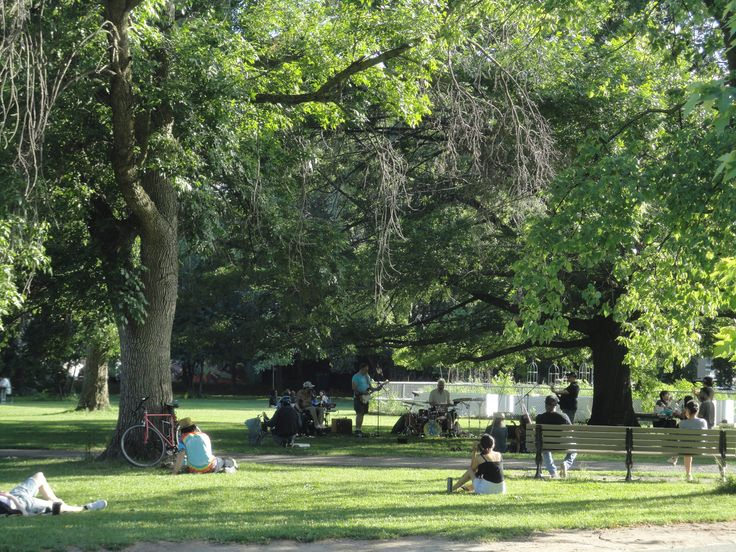

A BACKGROUND ON THIRD PLACES
Attempting to Define the “Third Place”
The concept of the “third place” was first introduced by sociologist Ray Oldenburg in his
book
The Great Good Place (Oldenburg, 1999). He defines third places as informal
gathering
sites
outside of the two primary environments where we spend most of our time: the “first place”
(home)
and the “second place” (work or school). These venues, such as cafes, libraries, and
parks, provide
neutral ground where people can gather and interact.
Sociologist Ray Oldenburg
Why are They Vital?
Third places are more than just “hangouts”; they are critical components of
a city’s social infrastructure that help build community resilience, foster social cohesion, and protect
against the modern epidemics of stress and social isolation (Klinenberg, 2018; Sun et al., 2025; Rhubart
et al., 2022).
Research shows that these spaces are particularly important for social mobility - consider something as simple as your local coffee shop’s bulletin board. Spaces function as spatial opportunity structures (Rhubart et al., 2022; Sun et al., 2025) where people can share information about jobs and services that might otherwise be out of reach (Rhubart et al., 2022; Sun et al., 2025).
Furthermore, different types of third places facilitate different kinds of relationships; for example, community amenities and places of worship are often more effective at bridging new friendship ties between diverse groups compared to more private commercial venues (Park et al., 2021; Sun et al., 2025).
Research shows that these spaces are particularly important for social mobility - consider something as simple as your local coffee shop’s bulletin board. Spaces function as spatial opportunity structures (Rhubart et al., 2022; Sun et al., 2025) where people can share information about jobs and services that might otherwise be out of reach (Rhubart et al., 2022; Sun et al., 2025).
Furthermore, different types of third places facilitate different kinds of relationships; for example, community amenities and places of worship are often more effective at bridging new friendship ties between diverse groups compared to more private commercial venues (Park et al., 2021; Sun et al., 2025).

Trinity Bellwoods Park, Toronto, ON
ThirdPlacesInc.
The reasoning behind our initiative, ThirdPlacesInc., is rooted in the
observable reality that access to these vital spaces is not equitable.
Recent studies have identified significant geographic and socio-geographic disparities in the availability of third places across North America, with access often determined by a neighbourhood’s socioeconomic status (Rhubart et al., 2022; Sun et al., 2025) Specifically, neighbourhoods with higher poverty rates or higher concentrations of marginalized racial and ethnic groups often have significantly fewer third places compared to wealthier or privileged areas (Rhubart et al., 2022; Small & McDermott, 2006; Sun et al., 2025). These disparities have been worsened by economic shifts and COVID-19, which triggered widespread closures of businesses and amenities, especially in already-vulnerable communities (Sun et al., 2025).
Note that increasing to third places is not automatically equitable. While they support wellbeing, new amenities can trigger commercial gentrification, raising rents and potentially leading to the displacement of residents (Chapple et al., 2017). Research from the Urban Displacement Project has highlighted how such pressures have already put large portions of urban populations at risk of being priced out of their own communities (Chapple et al., 2017; Klinenberg, 2018). We have focused our analysis on the City of Toronto to highlight these local inequities and advocate for just access to third places for everyone.
Recent studies have identified significant geographic and socio-geographic disparities in the availability of third places across North America, with access often determined by a neighbourhood’s socioeconomic status (Rhubart et al., 2022; Sun et al., 2025) Specifically, neighbourhoods with higher poverty rates or higher concentrations of marginalized racial and ethnic groups often have significantly fewer third places compared to wealthier or privileged areas (Rhubart et al., 2022; Small & McDermott, 2006; Sun et al., 2025). These disparities have been worsened by economic shifts and COVID-19, which triggered widespread closures of businesses and amenities, especially in already-vulnerable communities (Sun et al., 2025).
Note that increasing to third places is not automatically equitable. While they support wellbeing, new amenities can trigger commercial gentrification, raising rents and potentially leading to the displacement of residents (Chapple et al., 2017). Research from the Urban Displacement Project has highlighted how such pressures have already put large portions of urban populations at risk of being priced out of their own communities (Chapple et al., 2017; Klinenberg, 2018). We have focused our analysis on the City of Toronto to highlight these local inequities and advocate for just access to third places for everyone.
Navigating the Webpage
We provide two interactive mapping tools. The Third Space Walkability Map
is designed for anyone to use, allowing users to search for venue type, view walking distance buffers,
and gain more information about each third space.
For a more analytical view, the Census Tract Accessibility Map allows users to view Toronto neighbourhoods by their third place density, as well as sociodemographic variables including % visible minority, % of the population with a bachelor’s degree, and median income. Its default view is a spatially constrained multivariate cluster analysis of all variables. This tool has the potential to be used by policymakers and urban planners to identify neighbourhoods of concern that have been left behind in terms of social infrastructure (Sun et al., 2025). By making this data accessible, we aim to advocate change in the neighbourhoods that need these community-building spaces the most.
For a more analytical view, the Census Tract Accessibility Map allows users to view Toronto neighbourhoods by their third place density, as well as sociodemographic variables including % visible minority, % of the population with a bachelor’s degree, and median income. Its default view is a spatially constrained multivariate cluster analysis of all variables. This tool has the potential to be used by policymakers and urban planners to identify neighbourhoods of concern that have been left behind in terms of social infrastructure (Sun et al., 2025). By making this data accessible, we aim to advocate change in the neighbourhoods that need these community-building spaces the most.
References
● Klinenberg, E. (2018). Palaces for the people: How social infrastructure can help fight
inequality,
polarization, and the decline of civic life. Crown.
● Oldenburg, R. (1999). The great good place: Cafes, coffee shops, bookstores, bars, hair salons, and other hangouts at the heart of a community. Marlowe & Company.
● Rhubart, D., Sun, Y., Pendergrast, C., & Monnat, S. (2022). Sociospatial disparities in “third place” availability in the United States. Socius: Sociological Research for a Dynamic World, 8.
● Sun, Y., Esposito, M. H., Sagehorn, M., Melendez, R. A., & Finlay, J. M. (2025). Uneven access to essential services and amenities: Geographic disparities in ‘third place’ availability across the United States from 2010 to 2021. Health & Place, 96, 103583.
● Oldenburg, R. (1999). The great good place: Cafes, coffee shops, bookstores, bars, hair salons, and other hangouts at the heart of a community. Marlowe & Company.
● Rhubart, D., Sun, Y., Pendergrast, C., & Monnat, S. (2022). Sociospatial disparities in “third place” availability in the United States. Socius: Sociological Research for a Dynamic World, 8.
● Sun, Y., Esposito, M. H., Sagehorn, M., Melendez, R. A., & Finlay, J. M. (2025). Uneven access to essential services and amenities: Geographic disparities in ‘third place’ availability across the United States from 2010 to 2021. Health & Place, 96, 103583.